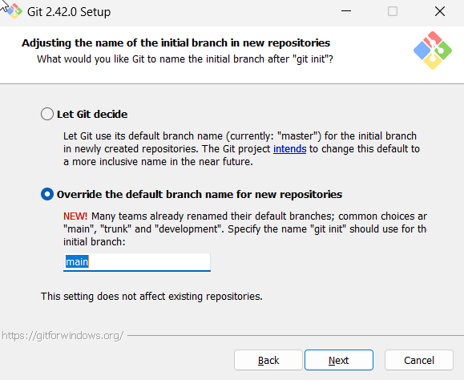
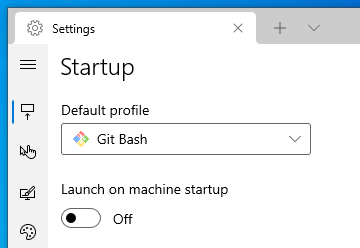
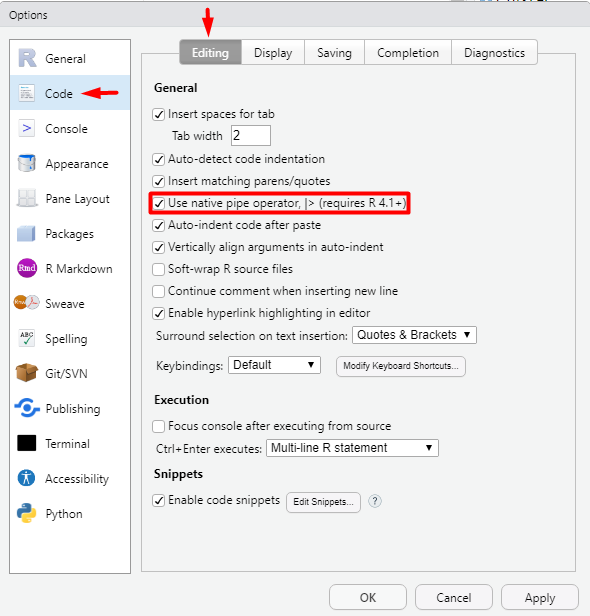
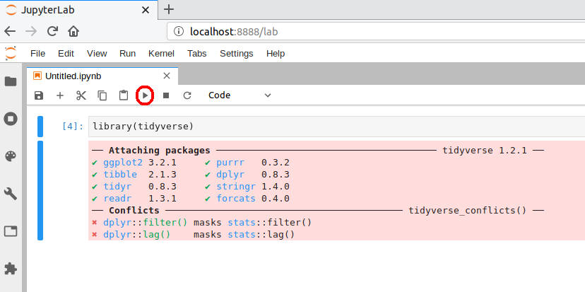

Windows
Installation notes
If you have already installed Git, Latex, Make, or any of the R or Python related packages please uninstall these and follow the instructions below to reinstall them (make sure to also remove any user configuration files and backup them if desired). In order to be able to support you effectively and minimize setup issues and software conflicts, we require all students to install the software stack the same way.
In all the sections below, if you are presented with the choice to download either a 64-bit (also called x64) or a 32-bit (also called x86) version of the application always choose the 64-bit version.
Once you have completed these installation instructions, make sure to follow the post-installation notes at the end to check that all software is setup correctly.
Web browser
In DSCI 310 we will be using several tools that work most reliably on Google Chrome and Firefox (including our online quiz software), so we recommend that you use one of these browsers.
- To install Chrome, go to https://www.google.com/chrome/, click on “Download Chrome” and follow the instructions on the website to finish the installation.
- To install Firefox, go to https://www.mozilla.org/en-US/firefox/new/, click on “Download Firefox” and follow the instructions on the website to finish the installation.
Visual Studio Code
The open-source text editor Visual Studio Code (VS Code) is both a powerful text editor and a full-blown Python IDE, which we will use for more complex analysis. Go to https://code.visualstudio.com/download and download the windows version of VS Code. After the download has finished, run the installer and accept the default configuration for all pages except for the following:
- Optional On the Select Additional Tasks page, check “Create a desktop icon” under “Additional icons”.
- Also on the Select Additional Tasks page check all four boxes under “Other”
- “Add ‘Open with Code’ action to Windows file context menu”
- “Add ‘Open with Code’ action to Windows directory context menu”
- “Register Code as an editor for supported file types”
- “Add to PATH” (this should be selected by default).

GitHub
In DSCI 310 we will use the publicly available GitHub.com. If you do not already have an account, please sign up for one at GitHub.com
Sign up for a free account at GitHub.com if you don’t have one already.
Git, Bash, and Windows Terminal
Although these three are separate programs, we are including them in the same section here since they are packaged together in the same installer on Windows. Briefly, we will be using the Bash shell to interact with our computers via a command line interface, Git to keep a version history of our files and upload to/download from to GitHub, and Windows Terminal to run the both Bash and Git.
Go to https://git-scm.com/download/win and download the windows version of git. After the download has finished, run the installer and accept the default configuration for all pages except for the following:
On the Select Components page, add a Git Bash profile to Windows Terminal.

On the Choosing the default editor used by Git page, select “Use Visual Studio Code as Git’s default editor” from the drop-down menu’

Set the default branch name to
main
To install windows terminal visit this link and click Get to open it in Windows Store. Inside the Store, click Get again and then click Install. After installation, click Launch to start Windows Terminal. In the top of the window, you will see the tab bar with one open tab, a plus sign, and a down arrow. Click the down arrow and select Settings (or type the shortcut Ctrl + ,). In the Startup section, click the dropdown menu under Default profile and select Git Bash.

You can now launch the Windows terminal from the start menu or pin it to the taskbar like any other program (you can read the rest of the article linked above for additional tips if you wish). To make sure everything worked, close down Windows Terminal, and open it again. Git Bash should open by default, the text should be green and purple, and the tab should read MINGW64:/c/Users/$USERNAME (you should also see /c/Users/$USERNAME if you type pwd into the terminal). This screenshot shows what it should look like:

Note: Whenever we refer to “the terminal” in these installation instructions, we want you to use the Windows Terminal that you just installed with the Git Bash profile. Do not use Windows PowerShell, CMD, or anything else unless explicitly instructed to do so.
To open a new tab you can click the plus sign or use Ctrl + Shift + t (you can close a tab with Ctrl + Shift + w). To copy text from the terminal, you can highlight it with the mouse and then click Ctrl + Shift + c. To paste text you use Ctrl + Shift + v, try it by pasting the following into the terminal to check which version of Bash you just installed:
bash --versionThe output should look similar to this:
GNU bash, version 5.2.15(1)-release (x86_64-pc-msys)
Copyright (C) 2020 Free Software Foundation, Inc.
License GPLv3+: GNU GPL version 3 or later <http://gnu.org/licenses/gpl.html>
This is free software; you are free to change and redistribute it.
There is NO WARRANTY, to the extent permitted by law.Note: If there is a newline (the
entercharacter) in the clipboard when you are pasting into the terminal, you will be asked if you are sure you want to paste since this newline will act as if you pressedenterand run the command. As a guideline you can pressPaste anywayunless you are sure you don’t want this to happen.
Let’s also check which version of git was installed:
git --versiongit version 2.42.0.windows.2Note: Some of the Git commands we will use are only available since Git 2.23, so make sure your if your Git is at least this version.
You can launch many windows programs from the terminal, e.g. to launch VS Code that we installed previously, you would type in code, let’s use this to check the version of vscode that we installed:
code --version1.81.1
6d9b74a70ca9c7733b29f0456fd8195364076dda
x64Configuring Git user info
Next, we need to configure Git by telling it your name and email. To do this, type the following into the terminal (replacing Jane Doe and janedoe@example.com, with your name and email that you used to sign up for GitHub, respectively):
git config --global user.name "Jane Doe"
git config --global user.email janedoe@example.comNote: To ensure that you haven’t made a typo in any of the above, you can view your global Git configurations by either opening the configuration file in a text editor (e.g. via the command
code ~/.gitconfig) or by typinggit config --list --global.
Setting VS Code as the default editor
To make programs run from the terminal (such as git) use VS Code by default, we will modify ~/.bash_profile. First, open it using VS Code:
code ~/.bash_profileNote: If you see any existing lines in your
~/.bash_profilerelated to a previous Python or R installation, please remove these.
Append the following lines:
# Set the default editor for programs launch from terminal
EDITOR="code --wait"
VISUAL=$EDITOR # Use the same value as for "EDITOR" in the line aboveThen save the file and exit VS Code.
Note: Most terminal programs will read the
EDITORenvironmental variable when determining which editor to use, but some readVISUAL, so we’re setting both to the same value.
In some cases, VScode is not set as the default text editor for git even after appending the two lines above, so to make sure it is registered properly, also run the following from your terminal:
git config --global core.editor "code --wait"On Windows, VScode sometimes reads a different configuration file than Git Bash. To avoid this, open your ~/.bashrc file:
code ~/.bashrcAnd append the following line:
# Do NOT add anything to this file, use `~/.bash_profile` instead.
# The next line automatically loads your `~/.bash_profile`
# any time a program tries to read your `~/.bashrc` file.
if [ -f ~/.bash_profile ]; then . ~/.bash_profile; fiThe comment is a reminder to your future self who might open up this file a few months from now =)
Setting Git Bash as the default VS Code terminal profile
Finally, let’s make sure the VS Code uses our newly installed Git Bash shell as its default terminal profile:
- Open Up VS Code and go to the general preferences / settings (shortcut
Ctrl+,). - Type in “Default terminal profile” and find the entry that reads
Terminal > Integrated > Default profile: Windows. - Select Git Bash from the drop down menu of this entry.
Now Git Bash should be opened automatically each time you open a new terminal in side VS Code.
Python, Conda, and JupyterLab
Python and Conda
In DSCI 310 we will be using Python and the conda package manager. To install Python and the conda package manager, we will use the Miniforge platform (read more here).
Select the appropriate link:
You can find the Windows download links here: https://conda-forge.org/miniforge/. Make sure you use the Miniforge3 installers, not the other ones listed. We will assume you downloaded the file into your Downloads folder.
Once downloaded, run the installer.
Use all the default options in the installer.
The install location should look something like: C:\Users\YOUR_USER_NAME\miniforge3
Note: Do not add miniforge to PATH. We will set this up later.
After installation, open the Start Menu and search for the program called “Miniforge Prompt”. When this opens you will see a prompt similar to (base) C:\Users\your_name. Type the following to check that your Python installation is working:
python --versionwhich should return Python 3.11.0 or greater:
Python 3.11.0If not, run the following command in the Miniforge Prompt, Confirm that you are in the (base) environment. Then update the base python with:
conda install python=3.11Integrating Python with the Git Bash terminal
To avoid having to open the separate Anaconda Prompt every time we want to use Python, we can make it available from the (Git Bash) terminal, which is what we will be using most of the time. To set this up, open the “Anaconda Prompt (miniconda3)” again and type:
conda init bashYou will see that this modified a few configuration files, which makes conda visible to the terminal. Close all open terminal windows and launch a new one, you should now see that the prompt string has changed to include the word (base) as in the screenshot below:

If you type
python --versionyou should now see the same output as above:
Python 3.11.0Let’s also check the version of the conda package manager. If you type
conda --versionyou should see something like this
conda 23.5.2Optional: One annoyance with our current terminal setup is that the word
(base)is not on the same row as the rest of the prompt string (the part withyour_name@your_computer. To fix this we can edit the.bash_profileconfiguration file to indicate that we do not want a newline at the beginning of the prompt string. Open up the configuration file using VS Code by typing the following command into a terminal:code "/c/Program Files/Git/etc/profile.d/git-prompt.sh"Delete the line that reads the following (it should be line 13):
PS1="$PS1"'\n' # new lineWhile we are in this file, let’s also remove the line that says
PS1="$PS1"'$MSYSTEM ' # show MSYSTEM(line 17), to remove some clutter from the terminal.Click to save the file, when VS Code prompts you that the saving failed, click “Retry as Admin” and then “Yes”. That’s it! Now if you launch a new terminal instance, you will see
(base)on the same line as the rest of the prompt string as in the screenshot below.

Installing Python packages
conda installs Python packages from different online repositories which are called “channels”. A package needs to go through thorough testing before it is included in the default channel, which is good for stability, but also means that new versions will be delayed and fewer packages are available overall. There is a community-driven effort called the conda-forge (read more here), which provides more up to date packages. Conda-forge is already set up when we installed Miniforge3
To install packages individually, we can now use the following command: conda install <package-name>. After running that command conda will show you the packages that will be downloaded, and you can press enter to proceed with the installation. If you want to answer yes by default and skip this confirmation step, you can replace conda install with conda install -y. Also note that we may occasionally need to install packages using pip, the standard Python package manager. The installation command is very similar to that of conda: pip install <package-name>.
In the next session we will use conda to install some of the key packages we will use in DSCI 310.
JupyterLab setup
JupyterLab is a coding environment that we will be using frequently throughout the course. The JupyterLab git extension facilitates using notebooks in JupyterLab together with Git & GitHub. The spellchecker helps us correcting typos in our writing. Install them via the following commands:
conda install jupyterlab jupyterlab-git jupyterlab-spellcheckerTo test that your JupyterLab installation is functional, you can type jupyter lab into a terminal, which should open a new tab in your default browser with the JupyterLab interface. To exit out of JupyterLab you can click File -> Shutdown, or go to the terminal from which you launched JupyterLab and hold Ctrl while pressing c twice.
R, IRkernel, Rtools, and RStudio
R is the second language that we will be using frequently in this course. We will use R both in Jupyter notebooks and in RStudio.
R
Go to https://cran.r-project.org/bin/windows/base/ and download the latest version of R for Windows. Open the file and follow the installer instructions accepting the default configuration.
After the installation is complete, we will add the R executables to the PATH variable in terminal so that you can use it without typing the full path to R each time Open a terminal and type:
code ~/.bash_profileAppend the following lines to the file
# Automatically expand the R version number
R_DIR=(/c/Program\ Files/R/*/bin/x64)
# Add R and Rscript to PATH
export PATH="$R_DIR:$PATH" # double quote is important hereThen save the file and exit VS Code. Now you can open a new terminal window and type
R --versionwhich should return something like:
R version 4.2.1 (2022-06-23 ucrt) -- "Funny-Looking Kid"
Copyright (C) 2022 The R Foundation for Statistical Computing
Platform: x86_64-w64-mingw32/x64 (64-bit)
R is free software and comes with ABSOLUTELY NO WARRANTY.
You are welcome to redistribute it under the terms of the
GNU General Public License versions 2 or 3.
For more information about these matters see
https://www.gnu.org/licenses/.Note: Although it is possible to install R through conda, we highly recommend not doing so. In case you have already installed R using conda you can remove it by executing
conda uninstall r-base.
RStudio
Download the Windows preview version of RStudio Desktop (not Pro) from https://www.rstudio.com/products/rstudio/download/preview. Open the file and follow the installer instructions.
To see if you were successful, try opening RStudio by clicking on its icon.
Next, we will make sure that Rstudio uses the same directories as R from terminal for its configuration. To do this, we will need to set an environmental variable in Windows. First, open the start menu, type “env” and select the match that reads “Edit the system environment variables”. Click the button at the bottom that reads “Environmental Variables…”:

Under “User variable” click the “New…” button:

And type in R_USER as the “Variable name” and C:\Users\username as the “Variable value”, replacing username with your actual user name (if you don’t know your user name, look at the top of the screenshot above where it says “User variables for your_username”):

Click “OK” on all of the three windows we opened above and you’re done! If you open the console in RStudio and also R from the Windows Terminal (open Windows Terminal, type R, and then press enter) and type the following in both:
.libPaths()both applications should return the same values, and the first one should be a path inside your user directory e.g.
"C:/Users/florencia/R/win-library/4.2" "C:/Program Files/R/R-4.2.2/library"If they don’t return the same paths, please try to setting up your environmental variable again and making sure that it is pointing to the correct folder.
Do not continue unless both R from terminal and R from RStudio return the same paths here or later parts of the installation will fail.
Now we are going to change RStudio’s Insert Pipe shortcut so that it inserts the new native pipe operator |>. Go to Tools > Global Options > Code > Editing and tick the following option:

Once the change is made you can try in the RStudio console Ctrl + Shift + m to check if works.
Finally, let’s install a common R package that you used a lot in DSCI 100 by typing the following into the console inside RStudio:
install.packages("tidyverse")Rtools
Windows users will also need to install Rtools, which will allow you to use external libraries. Go to http://cran.r-project.org/bin/windows/Rtools/ and download the latest version (e.g., rtools40v2-x86_64.exe). After the download has finished, run the installer with the default configuration. Do not follow the Rtools’ website instructions for “Putting Rtools on the PATH”. RStudio will put Rtools on the PATH automatically when it is needed.
To test if your installation was successful, open RStudio (restart it if you already have it open) and type the following into the Console:
install.packages("jsonlite", type = "source")If the jsonlite package installs without errors, Rtools is setup correctly.
IRkernel
The IRkernel package is needed to make R work in Jupyter notebooks. To enable this kernel in the notebooks, install by pasting the following command into the RStudio Console:
install.packages('IRkernel')Next, open the Windows terminal and type the following (you can’t use RStudio for this step since it doesn’t honor $PATH changes)
R -e "IRkernel::installspec()"To see if you were successful, try running JupyterLab and check if you have a working R kernel. To launch the JupyterLab type the following in the terminal:
jupyter labA browser should have launched and you should see a page that looks like the screenshot below. Now click on “R” notebook (circled in red on the screenshot below) to launch an JupyterLab with an R kernel.

Sometimes a kernel loads, but doesn’t work as expected. To test whether your installation was done correctly now type library(tidyverse) in the code cell and click on the run button to run the cell. If your R kernel works you should see something like the image below:

To improve the experience of using R in JupyterLab, we will add keyboard shortcuts for inserting the common R operators <- and |>. Go to Settings -> Settings Editor. Then click JSON Settings Editor in the top right corner and click on Keyboard Shortcuts in the navigation panel to the left. You will see two panels, the right-most panel allows you to perform advanced modification of keyboards shortcuts in JupyterLab and it already contains quite a few shortcuts. We’re going to add two more shortcuts, by pasting a text snippet just before the first existing shortcut. Go ahead and create a new line just after the line that says "shortcuts": [ and paste the following:
{
"command": "apputils:run-first-enabled",
"selector": "body",
"keys": ["Alt -"],
"args": {
"commands": [
"console:replace-selection",
"fileeditor:replace-selection",
"notebook:replace-selection",
],
"args": {"text": "<- "}
}
},
{
"command": "apputils:run-first-enabled",
"selector": "body",
"keys": ["Accel Shift M"],
"args": {
"commands": [
"console:replace-selection",
"fileeditor:replace-selection",
"notebook:replace-selection",
],
"args": {"text": "|> "}
}
},After you have pasted this text, hit the small floppy disk in the top right (or Ctrl + s) to save the settings. Here is a screenshot of what it looks like with the settings saved:

To check that the extension is working, open JupyterLab, launch an R notebook, and try inserting the operators by pressing Alt + - or Shift + Ctrl + m, respectively. You could add any arbitrary text insertion command the same way, but this is all that is required for this course.
Quarto CLI
Quarto is an open-source scientific and technical publishing system that you can access from VSCode, Jupyter Lab, RStudio, or the terminal.
The RStudio version that you have downloaded is already equipped with the last version of Quarto. You can check this by opening a new document in File -> New File -> Quarto Document.
Quarto can be used outside RStudio as well, this is why we are going to install Quarto CLI. Please, download the last version of Quarto CLI for Windows.
After the installation finishes, close all the terminals you may have open. Then, open a new one and try running this command:
quarto --versionIf the installation was successful you will read the output:
1.3.450Note: Pay attention that due to the Windows settings suggested in this installation you will always have to write
quarto.cmdinstead ofquartoto run Quarto commands. Read more here.
LaTeX
We will install the lightest possible version of LaTeX and its necessary packages as possible so that we can render Jupyter notebooks and R Markdown documents to html and PDF. If you have previously installed LaTeX, please uninstall it before proceeding with these instructions.
First, open RStudio and run the following commands to install the tinytex package and setup tinytex:
install.packages('tinytex')
tinytex::install_tinytex()Note that you might see two error messages regarding lua during the installation, you can safely ignore these, the installation will complete successfully after clicking “OK”.
In order for Git Bash to be able to find the location of TinyTex, you will need to sign out of Windows and back in again. After doing that, you can check that the installation worked by opening a terminal and asking for the version of latex:
latex --versionYou should see something like this if you were successful:
pdfTeX 3.141592653-2.6-1.40.24 (TeX Live 2022)
kpathsea version 6.3.4
Copyright 2022 Han The Thanh (pdfTeX) et al.
There is NO warranty. Redistribution of this software is
covered by the terms of both the pdfTeX copyright and
the Lesser GNU General Public License.
For more information about these matters, see the file
named COPYING and the pdfTeX source.
Primary author of pdfTeX: Han The Thanh (pdfTeX) et al.
Compiled with libpng 1.6.37; using libpng 1.6.37
Compiled with zlib 1.2.11; using zlib 1.2.11
Compiled with xpdf version 4.03The above is all we need to have LaTeX work with R Markdown documents, however for Jupyter we need to add several more packages.
When you sign back in, install the additional LaTeX packages needed for Jupyter by pasting the following into the new terminal instance and press enter: by pasting the following:
tlmgr.bat install eurosym \
adjustbox \
caption \
collectbox \
enumitem \
environ \
fp \
jknapltx \
ms \
parskip \
pdfcol \
pgf \
rsfs \
soul \
tcolorbox \
titling \
trimspaces \
ucs \
ulem \
upquote \
lwarp \
oberdiekTo test that your latex installation is working with jupyter notebooks, launch jupyter lab from a terminal and open either a new notebook or the same one you used to test IRkernel above. Go to File -> Save and Export Notebook as... -> PDF. If the PDF file is created, your LaTeX environment is set up correctly.
WebPDF export
Jupyter recently added another way to export notebooks to PDF which does not require Latex and makes the exported PDF look similar to notebooks exported to HTML. This requires the pyppeteer package, which we can install by typing the following into Windows Terminal.
pip install "nbconvert[webpdf]"
playwright install chromiumNow try exporting a notebook by clicking File -> Save and Export Notebook As... -> WebPDF.
Make
Later in the program, we will be using make to automate our analysis scripts. Download make from this URL. Click on the downloaded zip-file to open it in the File Explorer and click the button in the “Extract” tab that reads “Extract all”. Change the extract location to C:\Users\YOUR_USERNAME\make-4.3 (substituting in your actual username instead of YOUR_USERNAME) and click “Extract”. See the screenshots below if you’re unsure what to click.


Note: It is advisable to show file extensions by default in the Windows File Explorer. Click the
Viewtab and check the box next toFile name extensions.
Next we need to add make’s bin folder to our PATH so that we can use he command make from the terminal (like we did with R earlier). Open the bash configuration file with VS Code again by pasting this into a terminal:
code ~/.bash_profileAnd replace the section that reads:
# Add R and Rscript to path
export PATH="${R_DIR}:$PATH"with the following to prepend make’s bin folder to the PATH (note that ${USERNAME} below will be automatically expanded to your actual username by bash, so you don’t need to replace it manually.
# Add R, Rscript, and Make to path
export PATH="/c/Users/${USERNAME}/make-4.3/bin:${R_DIR}:$PATH"Then save the file and exit VS Code. Launch a new terminal and run
make --versionwhich should return something like
GNU Make 4.3
Built for Windows32
Copyright (C) 1988-2020 Free Software Foundation, Inc.
License GPLv3+: GNU GPL version 3 or later <http://gnu.org/licenses/gpl.html>
This is free software: you are free to change and redistribute it.
There is NO WARRANTY, to the extent permitted by law.Docker
You will use Docker to create reproducible, sharable and shippable computing environments for your analyses. For this you will need a Docker account. You can sign up for a free one here.
After signing-up and signing into the Docker Store, go here and click on the “Get Docker Desktop” button on the right hand side of the screen. Then follow the installation instructions on that screen to install the stable version.
Note: If you see a warning saying that your WSL installation is incomplete, you can click the link to install the kernel update and then restart per the instructions in the warning message.
After installation (Docker will make you sign out to finish installing), launch a terminal and type
docker run hello-worldwhich should output something like this:
Unable to find image 'hello-world:latest' locally
latest: Pulling from library/hello-world
0e03bdcc26d7: Pulling fs layer
0e03bdcc26d7: Verifying Checksum
0e03bdcc26d7: Download complete
0e03bdcc26d7: Pull complete
Digest: sha256:49a1c8800c94df04e9658809b006fd8a686cab8028d33cfba2cc049724254202
Status: Downloaded newer image for hello-world:latest
Hello from Docker!
This message shows that your installation appears to be working correctly.
To generate this message, Docker took the following steps:
1. The Docker client contacted the Docker daemon.
2. The Docker daemon pulled the "hello-world" image from the Docker Hub.
(amd64)
3. The Docker daemon created a new container from that image which runs the
executable that produces the output you are currently reading.
4. The Docker daemon streamed that output to the Docker client, which sent it
to your terminal.
To try something more ambitious, you can run an Ubuntu container with:
$ docker run -it ubuntu bash
Share images, automate workflows, and more with a free Docker ID:
https://hub.docker.com/
For more examples and ideas, visit:
https://docs.docker.com/get-started/VS Code extensions (Optional)
The real magic of VS Code is in the extensions that let you add languages, debuggers, and tools to your installation to support your specific workflow. From within VS Code you can open up the Extension Marketplace to browse and install extensions by clicking on the Extensions icon in the Activity Bar indicated in the figure below.

To install an extension, you simply search for it in the search bar, click the extension you want, and then click “Install”. There are extensions available to make almost any workflow or task you are interested in more efficient! Here we are interested in setting up VS Code as a Python IDE. To do this, search for and install the following extensions:
Python (everything Python: notebooks, debugging, linting, formatting, etc.)
markdownlint (markdown linting and style checking extension)
GitLens (powerful extension that extends VS Code’s native git capabilities)
Git History (intutive view of your git history)
Docker (easily use Docker from VS Code)
Quarto (integrated render and preview for Quarto documents and more)
(Optional) Material Theme and/or Predawn Theme Kit (additional colour themes to choose from)
(Optional) Material Icon Theme (great-looking custom file icons!)
This video tutorial is an excellent introduction to using VS Code in Python.
Post-installation notes
You have completed the installation instructions, well done 🙌! We have created a script to help you check that your installation was successful, and to provide instructions for how you can troubleshoot any potential issues. To run this script, please execute the following command from your terminal.
bash <(curl -Ss https://raw.githubusercontent.com/UBC-DSCI/dsci-310-student/main/src/check_setup.sh)The output from running the script will look something like this:
# DSCI 310 setup check 2024.1
If a program or package is marked as MISSING,
this means that you are missing the required version of that program or package.
Either it is not installed at all or the wrong version is installed.
The required version is indicated with a number and an asterisk (*),
e.g. 4.* means that all versions starting with 4 are accepted (4.0.1, 4.2.5, etc).
You can run the following commands to find out which version
of a program or package is installed (if any):
name_of_program --version # For system programs
conda list # For Python packages
R -q -e "as.data.frame(installed.packages()[,3])" # For R packages
Checking program and package versions...
## Operating system
ProductName: macOS
ProductVersion: 13.4
BuildVersion: 22F66
## System programs
OK rstudio 2023.12.0+369
OK R 4.3.2 (2023-10-31) -- "Eye Holes"
OK python 3.11.6
OK conda 23
OK bash 3.2.57(1)-release (arm64-apple-darwin22)
OK git 2.39.2 (Apple Git-143)
OK make 3.81
OK latex 3.141592653-2.6-1.40.25 (TeX Live 2023)
OK tlmgr 5:21 +0200)
OK docker 24.0.6, build ed223bc
OK code 1.85.0
## Python packages
OK nbconvert-core=7.8.0
OK playwright=1.40.0
OK jupyterlab=4.0.6
OK jupyterlab-git=0.41.0
OK jupyterlab-spellchecker=0.8.4
OK jupyterlab PDF-generation was successful.
OK jupyterlab WebPDF-generation was successful.
OK jupyterlab HTML-generation was successful.
## R packages
OK IRkernel=1.3.2
OK tinytex=0.46
OK rmarkdown PDF-generation was successful.
OK rmarkdown HTML-generation was successful.
The above output has been saved to the file /Users/timberst/Documents/dsci-310/dsci-310-student/check-setup-310.log
together with system configuration details and any detailed error messages about PDF and HTML generation.
You can open this folder in your file browser by typing `open .` (without the surrounding backticks).As you can see at the end of the output, a log file is saved in your current directory. We might ask you to upload this file if we need to troubleshoot your installation, so that we can help you more effectively. If any of your packages are marked as “MISSING” you will need to figure out what is wrong and possibly reinstall them. Once all packages are marked as “OK” we will ask you to submit this log file, so that we can confirm that your installation was successful. Details on where to submit will be provided later.
Note: In general you should be careful running scripts unless they come from a trusted source as in this case (just like how you should be careful when downloading and installing programs on your computer).